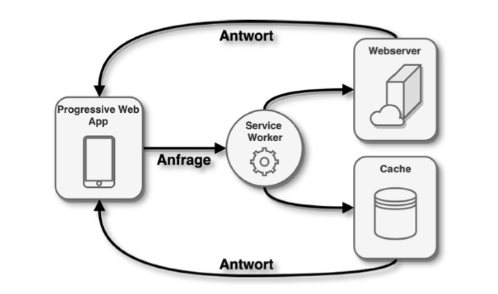
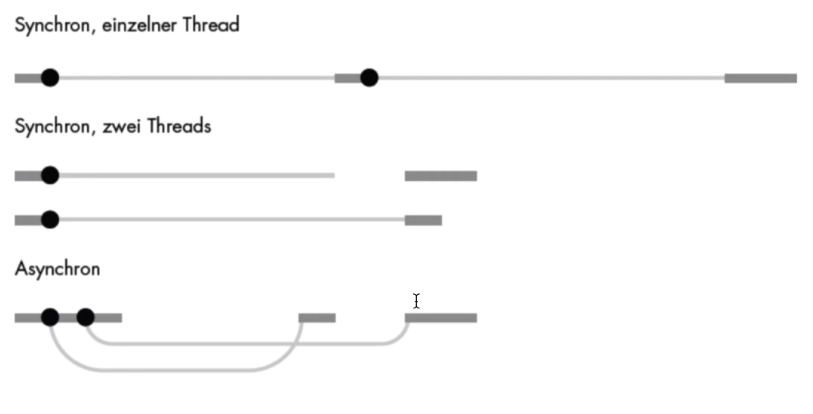

Vorlesung 7 - PHP
 17.05.2021
17.05.2021
Node.js und PWAs
Node
Die heutige Vorlesung startete mit einer kurzen Einführung in Node.js. Kurz zusammengefasst handelt es sich dabei um eine Laufzeitumgbung für serverseitiges JavaScript. Dieses benötigt dazu keinen Web-Browser (obwohl es die JavaScript Engine des Chrome Browsers verwendet). Zusätzlich besitzt es auch einen Paketmanager - npm - um Erweiterungen hinzuzuladen.
PWAs
Danach haben wir uns noch einmal angeschaut wie sich Anwendungen auf mobilen Geräten über die Zeit hinweg entwickelt haben. Angefangen mit den nativen Apps, also den Apps die in einer "lokalen Programmiersprache" geschrieben wurden (auf iOS zum Beispiel Objective C oder Swift). Gegen 2010 kamen dann noch die hybriden Apps dazu. Diese stellen eine Verschmelzung aus Web App und nativer App dar und sind, wie im Skript beschrieben "mobile-only". Das bedeutet, dass man für weitere Gerätetypen (z.B. Desktops) nochmal eigene Apps braucht. Wie Herr Noll in der Vorlesung sagte, macht es Sinn diesen Weg zu gehen, falls man ohnehin schon eine Desktopanwendung hat (oder keine braucht). Ansonsten könnte der dritte Weg interessant sein. Denn seit 2015 gesellten sich noch die PWAs (Progressive Web Apps) dazu. Diese sind im Endeffekt eine installierbare responsive Web Anwendung, die jedoch auch Zugriff auf die lokalen Geräte APIs hat (und in teilen auf dem Gerät liegt). Das klingt im ersten Moment verwirrend, aber das Schaubild aus den Folien zeigt es ganz gut.
Wir haben also unsere PWA, die auf dem Endgerät läuft und einen Service Worker. Der Service Worker (im Hintergrund ausgeführter JavaScript Code) regelt die Kommunikation mit dem Webserver und sorgt dafür, dass wir beispielsweise Push Benachrichtigungen erhalten können oder die Anwendung offline nutzen können. Für letzteres besitzt er einen eigenen Cache, sodass nicht für alle Anfragen eine Internetverbindung benötigt wird.
Wie erstellt man PWAs?
Als nächstes haben wir uns mit dem wie beschäftigt. Als Beispiel haben wir hier einen MERN Stack betrachtet. Dieser besteht aus MongoDB, Express.js, React.js und Node.js. Dieser sogenannte Full-Stack deckt alles ab, was man für eine Web Anwendung braucht:
- MongoDB als Datenbank
- Express als Backend
- React als Frontend
- Node als Laufzeitumgbung
Mit diesem Stack kann man sogenannte Single-Page-Applications erstellen. Dabei gibt es nur eine HTML Seite als "Mounting Point", die restlichen Seiten generiert man durch JavaScript.
Eine solche habe ich tatsächlich für mein Vertiefungsthema gebaut, allerdings mit einem MEVN Stack (V steht für Vue.js).
ES6 2015 Änderungen
Nachdem wir uns nun mit dem beschäftigt haben was man JavaScript machen kann ging es nun um die Sprache selbst. In diesem Abschnitt der Vorlesung habe ich leider nicht wirklich viel Neues mitgenommen, da ich mich einerseits für mein Vertiefungsthema aber auch "privat" schon vorher viel mit Vue, Node und Express beschäftigt habe und in diesen Frameworks/Laufzeitumgebungen Dinge wie Arrow-Functions, let und JSON Objekte essentielle Bestandteile sind.
Ein Thema, dass neu für mich war, waren die Klassen in JavaScript. Diese funktionieren tatsächlich ähnlich wie in Java. Einziger größerer (sichtbarer) Unterschied ist, dass der Konstruktor "constructor" heißt und nicht so wie die Klasse. Die restlichen Folien zu diesem Thema haben wir aus Zeitmangel übersprungen.
Asynchrone Programmierung
Abschließend haben wir uns noch einmal mit asynchroner Programmierung beschäftigt. Diese unterscheidet sich ein Wenig von der uns bereits bekannten parallelisierten Programmierung mit mehreren Threads. Eine gute Illustration bietet eine Folie aus der Vorlesung.
Bei den synchronen Herangehensweisen warten wir implizit darauf, dass alles (das gerade läuft) fertig ist um fortzufahren. Bei der asynchronen Herangehensweise allerdings haben wir die Fäden in der Hand und haben die explizite Kontrolle über den Ablauf. So könnten wir beispielsweise bestimmte Anwendungsdaten asynchron laden und währenddessen schon mit dem Aufbau der restlichen Seite fortfahren.
Kleinere Neuerungen
Gegen Ende der Vorlesung sind wir dann sehr schnell über noch zwei weitere Neuerungen gesprungen. Diese waren promises und imports. Erstere sind, wie der Name suggeriert, Versprechen die aufgestellt werden können. Diese werden entweder erfüllt oder nicht und auf Basis dieser Entscheidung können verschiedene weitere Aktionen ausgeführt werden. Imports ermöglichen es uns Code aus anderen Dateien wiederzuverwenden.
Das Ende - *dam* *dam* *dam* *daaaaaam*
Anschließend gab es noch eine kurze Fragestunde für die anstehende Prüfung. Danach ging auch unsere letzte Vorlesung zu Ende.
Es war auf jeden Fall eine der besten/interessantesten Vorlesungen der letzten beiden Semester, allerdings hätte ich mir tatsächlich mehr Neues gewünscht. Es scheint zwar immer wieder durch, aber gerade die zu Beginn der Vorlesung behandelten Themen glichen sich vom Inhalt her leider sehr mit Themen vorangegangener Veranstaltungen. Eine wirklich kurze Wiederholung hätte an diesen Stellen voll ausgereicht. So blieb leider gegen Ende nicht genug Zeit für die - zumindest meiner Meinung nach - interessanteren Themen wie Node, ES6, React, Vue, Express.